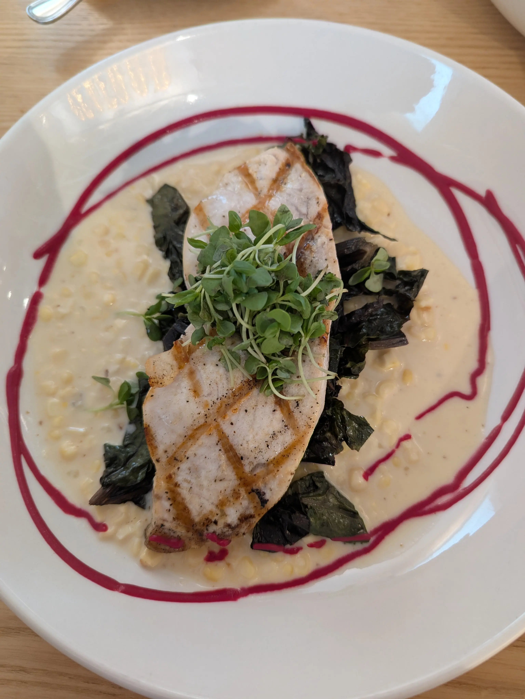
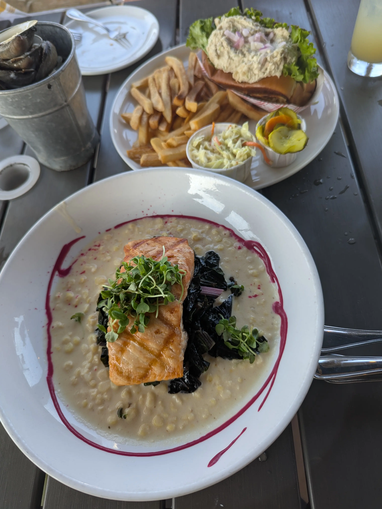
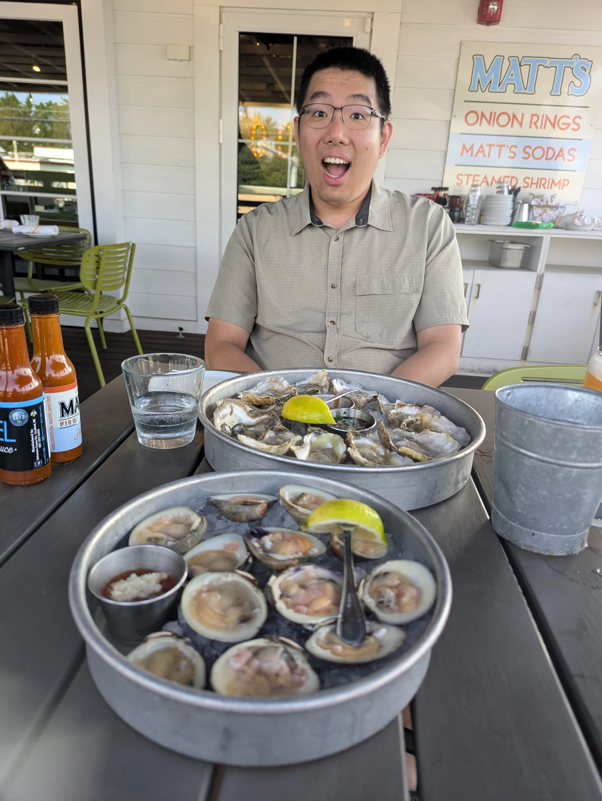

Matt’s Fish Camp in Fenwick Island
Date: June 11–12, 2025 — Fenwick Island, Delaware
There’s no sales tax in Delaware. That became our main motivation to dine across the state line during our time in Ocean City.
We found this place called Matt’s Fish Camp, and they had an amazing happy hour—buck-a-shuck oysters and 50-cent clams from 4 PM to 6 PM. I’ve never seen prices like that before. So of course, we went there twice—once wasn’t enough. We went for both happy hour and dinner.
Swordfish for Dinner
We tried the swordfish as our main dish. It was meaty and lean. I personally liked it, but my partner wasn’t a fan.

Solving the “FI” Salmon Mystery
On the first day, I noticed the salmon was labeled as coming from “FI,” which didn’t match any U.S. state abbreviation. We figured it out the next day at Sea Shell City, a nearby gift shop—FI stands for Fenwick Island.
So naturally, we ordered the “FI” salmon the next day. As always, salmon didn’t disappoint me.

Oysters and Clams: So Fresh
We ordered a dozen oysters and a dozen clams. They were unbelievably fresh. That’s when I realized the weird aftertaste I’d experienced with oysters from Whole Foods in Columbus wasn’t normal.
Each oyster and clam here was smooth and briny—nothing like what I’d had before. Now I understand why people say oysters are addictive.

Article tags: Personal